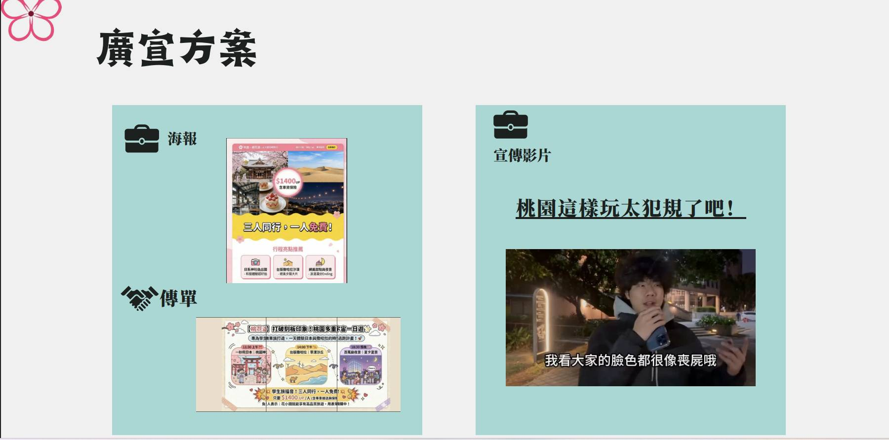
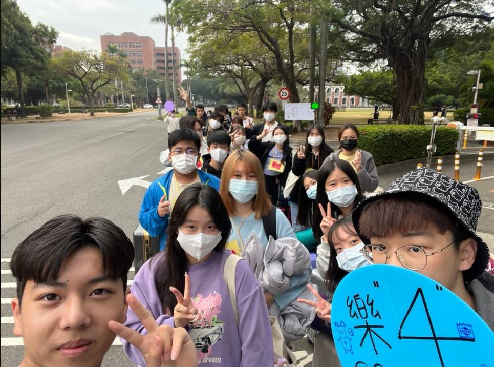
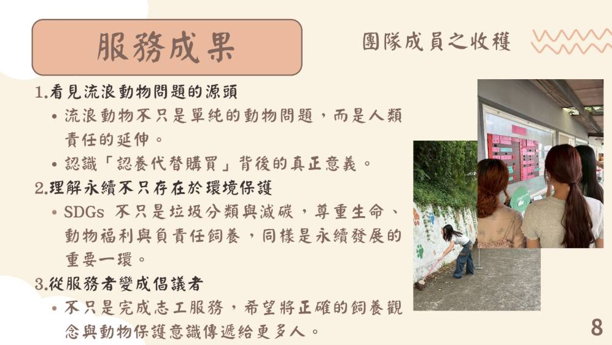

經歷一／課程專案
企業概論－旅遊行程企劃
參與角色：生產者
在企業概論課程中，我與組員一起完成桃園旅遊行程企劃， 並在組內擔任生產者，負責部分簡報製作與宣傳影片剪輯， 也參與文宣方案的設計討論。 製作過程中，我練習整理行程重點，透過簡報排版與影片剪輯， 讓觀眾更容易理解景點及行程特色。 這次經驗讓我學到，宣傳內容除了畫面美觀，也需要清楚傳達資訊， 而不同成員製作的內容，更需要透過溝通與調整維持一致。
成果佐證：小組廣宣方案簡報與宣傳影片。 觀看宣傳影片 ↗
中原大學／資訊管理學系
「把每一次學習，變成下一步的實力。」
我目前就讀於中原大學資訊管理學系，對人工智慧領域有興趣， 希望學習如何運用 AI 工具，協助人們解決實際問題。 我的個性比較內向，但做事細心，面對需要耐心處理的任務時， 能夠保持專注，也願意花時間釐清不懂的地方。 平常喜歡閱讀長篇文章，慢慢理解不同的觀點。 我希望在大學期間透過課程與實作累積程式設計和問題解決能力， 同時練習更主動地表達想法，為未來進入科技業做好準備。
目前年級：大二
就讀期間：2025–2029（預計畢業）
相關學習內容：Python、Java 程式設計， 以及 HTML、CSS 網頁設計。
以下為目前學習程度的自我評估。 我仍在累積基礎，會透過課程、練習與專案持續加強。
配色、字體與間距調整
Flexbox、Grid 區塊配置
英文文章與基礎技術資料閱讀
HTML 65%
CSS 60%
Python 70%
Java 65%

經歷一／課程專案
參與角色：生產者
在企業概論課程中，我與組員一起完成桃園旅遊行程企劃， 並在組內擔任生產者，負責部分簡報製作與宣傳影片剪輯， 也參與文宣方案的設計討論。 製作過程中，我練習整理行程重點，透過簡報排版與影片剪輯， 讓觀眾更容易理解景點及行程特色。 這次經驗讓我學到，宣傳內容除了畫面美觀，也需要清楚傳達資訊， 而不同成員製作的內容，更需要透過溝通與調整維持一致。
成果佐證：小組廣宣方案簡報與宣傳影片。 觀看宣傳影片 ↗

經歷二／營隊活動
參與角色：營隊學員、第四小組成員
我曾參加成功大學經濟營，和同組學員一起參與營隊活動。 在陌生的環境中，我練習主動與人交流，也學習在團體中配合彼此。 這段經驗讓我有機會接觸不同的人，感受大學校園的生活， 並思考自己的學習興趣。照片記錄了我們的小組合照， 以及小組獲頒的團體證書，留下這次參與的回憶。
活動佐證：營隊團體合照與小組證書。 查看營隊證書 ↗

經歷三／服務學習
參與角色：服務學習小組成員
在管理學課程中，我與組員前往動物之家參與服務， 擔任志工並協助環境清潔，透過實際接觸， 了解收容動物的生活環境與照顧需求。 這次經驗讓我發現，流浪動物問題不只與動物有關， 也與飼主責任和人們的飼養觀念息息相關。 我更理解認養代替購買的意義，也希望把尊重生命、 負責任飼養的觀念分享給身邊的人。
服務佐證：動物之家服務成果簡報與活動紀錄。